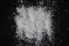

|
DOCUMENTATION_FORMAT: MINERAL
SAMPLE_ID: WS732
MINERAL_TYPE: Tectosilicate
MINERAL: Opal
FORMULA: SiO2*nH2O
FORMULA_HTML: SiO2•nH2O
COLLECTION_LOCALITY: Pershing Co., Nevada
ORIGINAL_DONOR: Wards Scientific
CURRENT_SAMPLE_LOCATION: USGS Denver Spectroscopy Laboratory
ULTIMATE_SAMPLE_LOCATION: USGS Denver Spectroscopy Laboratory
SAMPLE_DESCRIPTION:
IMAGE_OF_SAMPLE:

END_SAMPLE_DESCRIPTION.
XRD_ANALYSIS:
40 kV - 30 mA, 6.5-9.5 keV
File: opal732.out, -.mdi
References: Tada and Iiyama (1983, p. 232); Isaacs and others (1983, p.
258)
Found: opal having affinity to cristobalite
Quartz sought: no sign of quartz
Comment: 4 broad reflections in positions of strong cristobalite reflections.
One of these reflections (4.1 Angstroms) is extremely intense. Weak, broad reflection
at 2.1 Angstroms not explained.
J.S. Huebner, J. Pickrell, T. Schaefer, written communication 1994
END_XRD_ANALYSIS.
COMPOSITIONAL_ANALYSIS_TYPE: None # XRF, EPMA, ICP(Trace), WChem
COMPOSITION_TRACE:
COMPOSITION_DISCUSSION:
END_COMPOSITION_DISCUSSION.
MICROSCOPIC_EXAMINATION:
END_MICROSCOPIC_EXAMINATION.
SPECTROSCOPIC_DISCUSSION:
END_SPECTROSCOPIC_DISCUSSION.
SPECTRAL_PURITY: 1a2_3_4_ # WS732 # 1= 0.2-3, 2= 1.5-6, 3= 6-25, 4= 20-150 microns
{kind=link}